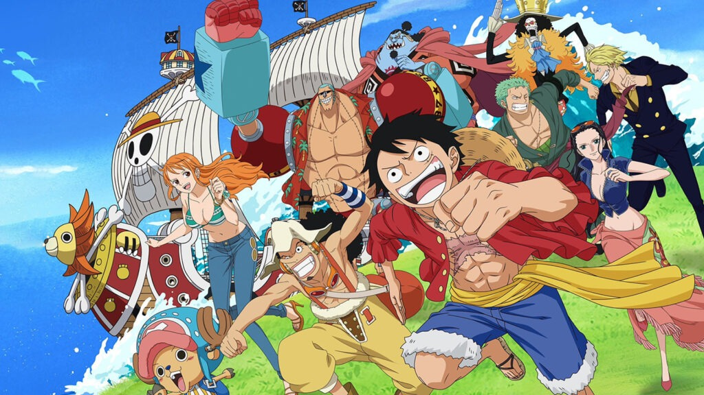

เนื้อเรื่อง

วันพีซ เป็นเรื่องราวในยุคทองของโจรสลัด โจรสลัดทุกคนมีเป้าหมายเดียวกันคือเพื่อค้นหา สมบัติในตำนานที่เรียกว่า "วันพีซ" โดยผู้ที่เคยครอบครองวันพีซนั้นมีอยู่คนเดียวตามที่เปิดเผยคือ ราชาแห่งโจรสลัด โกลด์ ดี โรเจอร์ ซึ่งหลังจากที่ ได้ครอบครองวันพีซแล้ว โกลด์ ดี โรเจอร์ ได้เป็นราชาโจรสลัด ชายผู้ได้ทั้ง ความมั่งคั่ง ชื่อเสียงและอำนาจ ผู้ที่ได้ทุกอย่างในโลกมาครอบครองนั้น ได้สั่งสลายกลุ่ม จากนั้นแยกย้ายกันไปไม่มีใครรู้อีก 1 ปีต่อมา ก็ได้มอบตัวและยอมรับโทษการประหารชีวิตที่เกาะโพลสตาร์ ที่เมืองโล้คทาวน์บ้านเกิดของตน และก่อนตายได้มีคนถามโรเจอร์เรื่องสมบัติของโรเจอร์ โรเจอร์ได้ทิ้งคำพูดสุดท้ายที่เปลี่ยนยุคสมัยของโจรสลัดว่า "สมบัติของฉันน่ะเหรอ อยากได้ก็เอาไปสิ ไปหาเอาเลย ฉันเอาทุกอย่างบนโลกไปไว้ที่นั่นหมดแล้ว" จากนั้นก็ถูกประหารทันที แล้วเหล่าคนดูในลานประหารก็โห่ร้องกันอย่างดีใจ กับคนที่ทราบข่าวก็ออกเดินเรือไปเป็นโจรสลัดกัน โจรสลัดทั้งหลายจึงมุ่งหน้าสู่ แกรนด์ไลน์ เพื่อตามหาวันพีซ จนโลกได้เข้าสู่ยุคสมัยของโจรสลัด 22 ปีกว่าต่อมา เด็กหนุ่มที่ใส่หมวกฟางมีพลังพิเศษจากผลปีศาจ จึงเป็นผู้มีพลังพิเศษ ในวันเกิดอายุ 17 ปี ได้ออกเดินเรือไปเป็นโจรสลัด กับออกรวบรวมพรรคพวกจากการผจญภัยในอีสต์บลู ตอนแรกออกเรือด้วยเรือเล็ก แต่เรือพังเพราะเจอน้ำวน จึงไปซ่อนตัวในถังไม้ พอตื่นเจอกับเด็กที่ชื่อโคบี้ได้ฟังว่าโคบี้ทำงานรับใช้บนเรือโจรสลัดมา 2 ปี โดยมีความฝันอยากเป็นทหารเรือ ลูฟี่จึงได้เตือนสติกับไปกอัลบีดา แล้วบอกพวกโจรสลัดให้เอาเรือเล็กมากับทั้งคู่ออกเรือไปส่งโคบี้ที่เกาะใกล้ ๆ พอไปถึงเกาะโยสึบะ ในเมืองเชล พบว่าถูกปกครองด้วยเผด็จการของทหารเรือที่นำโดยพันเอกมอร์แกน กับเจอโซโลนักล่าค่าหัวที่โดนจับ จึงไปช่วยโซโลกับชวนมาเป็นโจรสลัด จัดการกับมอร์แกน กับช่วยให้โคบี้เข้ากองทัพเรือ แล้วตอนเดินเรือทั้งคู่เกิดหิวลูฟี่ก่อเรื่องจะไปจับนกกิน แต่ดันโดนนกยักษ์จับบนฟ้า พอเจอเกาะจึงตกลงมาที่เมืองออเรนเจอกับ นามิ จอมโจรที่ขโมยสมบัติกับแผนที่เดินเรือไปแกรนด์ไลน์ กับถูกนามิหลอกจับไปต่อรองกับโจรสลัด ตัวตลกบากี้ แล้วพอโซโลมาช่วย ทั้ง 3 ร่วมมือกันจัดการพวกบากี้ กับออกเรือโดยมีนามิเป็นพวก กับออกเรือต่อพอไปถึงเกาะต่อไปคือเกาะเกคโค ที่หมู่บ้านไซรัปเจอ อุซปจอมโกหก แล้วทั้ง 4 คุยกันจนรู้ว่าอุซปคือลูกของยาซปที่เป็นลูกเรือของกลุ่มโจรสลัดผมแดง โดยช่วยอุซปจัดการกับกลุ่มโจรสลัดแมวดำ ที่นำโดยคุโระเพื่อช่วยหมู่บ้าน แล้วอุซปขอเข้าร่วมกับได้เรือคาราเวลที่ชื่อโกอิ้งแมรี่เป็นรางวัลจึงออกเรือ แล้วลูฟี่กับอุซปก่อเรื่องไปยิงโขดหินถล่มโดยที่มีคนนอนพักอยู่ ซึ่งคนที่นอนพักอยู่คือ โจนี่กับโยซาคุ 2 นักล่าค่าหัว พอทราบว่ารู้จักกับโซโลจึงปรับความเข้าใจกัน กับได้เบาะแสเรื่องชายตาเหยี่ยวที่ในภัตตราคารลอยทะเลบาราติเอ จึงเดินเรือไป แล้วลูฟี่ก่อเรื่องพังร้าน ต้องทำงานชดใช้ กับมีรองเชฟคือซันจิ แล้วพอกลุ่มโจรสลัดครีกบุมานำโดย ดอนครีก ลูฟี่ร่วมมือสู้กับซันจิ นามิออกเรือหนีกลับบ้านเกิด พอมิฮอว์ค 1 ใน 7 เจ็ดโจรสลัดมา โซโลไปท้าสู้ผลออกมาแพ้อย่างง่ายดายกับได้บาดแผล กับถูกเตือนสติจนเข้าใจ แล้วที่เหลือออกเรือตามนามิไป จนเหลือแต่ลูฟี่ที่ต้องร่วมมือกับซันจิปกป้องภัตราคาร พอจัดการครีกได้ก็พักฟื้นพอหายดี ก็ออกเรือโดยมีซันจิมาเป็นพวก ไปดกาะโคโนมิ ในหมู่บ้านโคโคยาชิใที่เป็นฐานของกลุ่มโจรสลัดอารอง ที่นำโดยอารอง พอนามิรู้ตัวว่าอารองโดนหลอก กลุ่มหมวกฟางจึงจัดการพวกอารองจนพินาศ หลังจากนั้นก็ออกเรือโดยนามิเป็นลูกเรืออย่างทางการ แล้วก็มุ่งหน้าไปโล้กทาวน์ที่เกาะโพลสตาร์เพื่อเตรียมซื้อของก่อนเข้าแกรนด์ไลน์ พอไปถึงทุกคนเตรียมซื้อของกันเสร็จ แล้วลูฟี่ก่อเรื่องไปยืนบนลานประหารโดนบากี้กับอัลบีดาจับเพื่อเตรียมประหาร โดนเกิดเหตุฟ้าผ่าจนลูฟี่รอด กับทั้งหมดก็หนีจากพันเอกสโมคเกอร์ที่เป็นคนคุมที่นี่ โดยมีชายที่ชื่อดราก้อนมาช่วยไว้ แล้วกลุ่มหมวกฟางก็ออกเรือเดินทางเข้าสู่แกรน์ไลน์